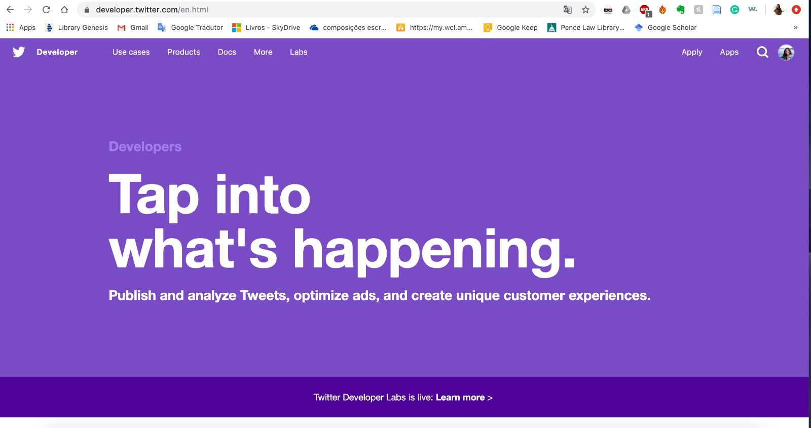
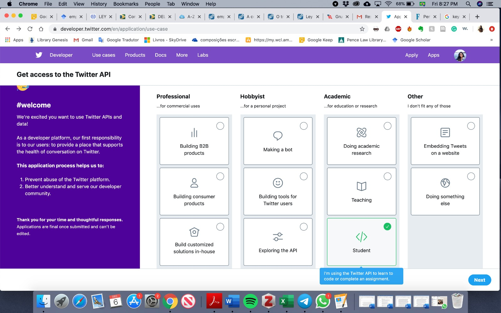
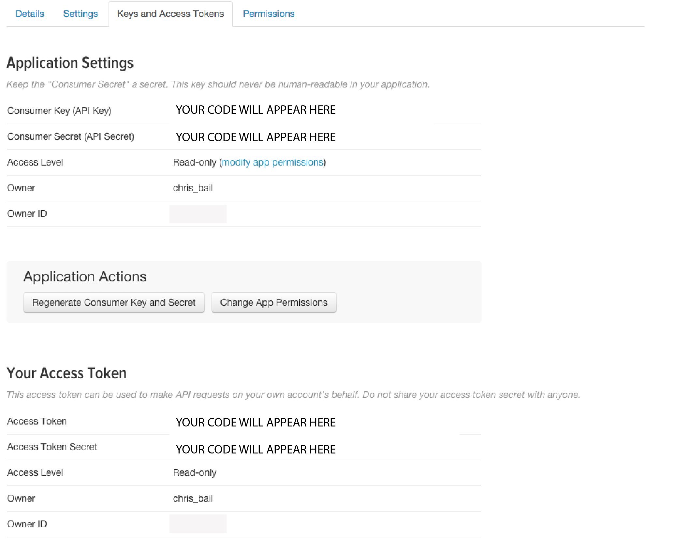

Há alguns passos que espero que os participantes do workshop possam fazer antes do nosso primeiro encontro no dia 18 de dezembro. Basicamente, estes passos consistem em praticar um pouco de R e solicitar senhas de acesso ao Twitter e ao site Fogo Cruzado.
Este curso utilizará R. O R é uma linguagem de programação gratuita, extremamente flexível e com uma comunidade de suporte excelente. É hoje um dos softwares mais utilizado por cientistas sociais e cientistas de dados em geral. Vamos também usar RStudio, que é uma interface que facilita o uso de R. É preciso que vocês possuam ambos instalados.
No primeiro dia, faremos uma breve introdução ao R. Porém, na aba Modulos há dois materiais de revisão em R que utilizei em outros cursos. Infelizmente, eles estão em inglês. Porém, há algumas sugestões de introduções ao R em português.
Meu modo de programar faz uso pesado dos pacotes de R chamados tidyverse. Estes pacotes foram desenvolvidos para facilitar a compreensão do R, e por isso que os utilizo tanto. Um dos materiais de revisão na aba Modulos ensina o uso do tidyverse. Além disto, o Professor Murilo Junqueira ofertará um workshop em R antes deste curso.
Para nossa aula de raspagem de dados, é necessário que vocês instalem este plug-in no Google Chrome que permite a identificação bem fácil dos elementos de uma página da web. O endereço abaixo ensina como instalar e utilizar.
Teremos um dia inteiro do workshop dedicado à aprender como acessar APIs. Em bom português, APIs são endereçõs on-line criados por um site para facilitar o envio e o compartilhamento de dados. Porém, vários sites, por uma questão de segurança, exigem um cadastro (token e username) para que o acesso as APIs sejam liberados. Aqui darei um passo a passo para vocês pegarem suas senhas em dois sites que utilizarei ao longo do curso.
Em primeiro lugar, vamos fazer um cadastro no Twitter. Para isto, você precisa ter uma conta normal no twitter. Em seguida, você deve ir no site de desenvolvedores https://developer.twitter.com/ para criar uma conta especial. Aqui nesse site, você clica no canto superior onde está escrito dashboard app

Em seguida, você clica de novo para aplicar. E seleciona a opção estudante, conforme abaixo.

A partir deste ponto, o twitter vai lhe perguntar informações como telefone, endereço, e porque você quer a conta de desenvolvedor. Seja sincero, o que estamos fazendo é permitido pelas regras do twitter. Escreva que você está fazendo um curso sobre acesso a APIs, usará o twitter de forma educacional, e não irá compartilhar os dados. Todas as vezes que o twitter pedir para indicar um site, coloque o endereço do site do curso.
Um porém. O twitter aceita pedidos somente em inglês. não perca tempo tentando escrever um ingles muito elaborado. Seja objetivo, e use o google translator caso você precise de ajuda. Depois disso, seu pedido irá para revisão, e pode ser que seja autorizado imediamente, ou que o twitter te solicite mais informações.
Depois que sua conta de desenvolvedor for aprovada, você poderá fazer login novamente e clicar no botão “Create a new app” no canto superior direito da tela. Nosso objetivo não é criar um aplicativo completo neste momento, mas simplesmente obter as credenciais necessárias para começar a fazer algumas chamadas simples para a API do Twitter. Se tudo der certo, você verá a seguinte imagem. Esses são suas credenciais. não compartilhe com ninguém. Ao longo do curso, aprenderemos juntos a utilizá-las.

O Fogo Cruzado é um laboratório de dados, uma plataforma digital colaborativa que registra a incidência de violência armada nas regiões metropolitanas do Rio de Janeiro e de Recife. Ao invés de ficarem respondendo emails fornecendo os dados, eles criaram uma API para permitir o acesso aos dados coletados no projeto. Nós vamos utilizar a API deles, então precisamos solicitar um cadastro.
Aqui você se registra e solicita a senha da api https://api.fogocruzado.org.br/register. É simples como criar um email. Depois de se cadastrar, você receberá um email, e será possível fazer o login no site. Depois de estar autenticado, este código abaixo vai retornar sua senha da api.
# api fogo cruzado
library(httr)
library(jsonlite)
library(tidyverse)
# Solicitar a senha
get_jwt <- httr::POST("https://api.fogocruzado.org.br/api/v1/auth/login",
query = list(email = "adicione_seu_email_aqui", password = "Sua_senha_no_fogo_cruzado"))
token <- httr::content(get_jwt)$access_token
# token = sua senha de acesso à API. Caso você não consiga implementar alguns desses passos aqui. não há problema nenhum. Podemos trabalhar juntos no primeiro dia no que você estiver com problemas. O uso de APIs será tema do segundo dia de curso.